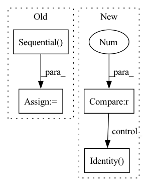

Pattern ID :2947
Before Change
nn.Dropout(dropout) if dropout > 0 else nn.Identity(),
self.conv2
)
self.bypass = nn.Sequential()
if stride != 1:
self.bypass = nn.Upsample(scale_factor=2)
def forward(self, x_in, noise_embed):After Change
nn.Conv2d(out_channels, out_channels, 3, 1, padding=1)
)
self.bypass = nn.Sequential(
nn.Upsample(scale_factor=2) if stride > 1 else nn.Identity() ,
nn.Conv2d(in_channels, out_channels, 1, 1)
)
In pattern: SUPERPATTERN
Frequency: 3
Non-data size: 4
Instances Fragment ID: 11409756
Project Name: janspiry/image-super-resolution-via-iterative-refinement
Commit Name: eeae1c09083fea8dbb057a2ca7eb6b0e5e6a7e1b
Time: 2021-08-03
Author: jiangliangwei@tetras.com
File Name: model/modules/unet.py
M Class Name: ResBlockUp
N Class Name: ResBlockUp
M Method Name: __init__(7)
N Method Name: __init__(7)
M Parent Class: nn.Module
N Parent Class: nn.Module
M File Name: model/modules/unet.py
N File Name: model/modules/unet.py
M Start Line: 55
M End Line: 96
N Start Line: 70
N End Line: 88
Before Change
self.alibi = AlibiPositionalBias(heads = heads)
self.to_q = nn.Sequential(
nn.Conv1d(dim, inner_dim, 1, bias = False),
nn.Conv1d(inner_dim, inner_dim, 3, bias = False, groups = inner_dim)
)
self.to_k = nn.Sequential(
nn.Conv1d(dim, inner_dim, 1, bias = False),
nn.Conv1d(inner_dim, inner_dim, 3, bias = False, groups = inner_dim)After Change
ds_convs = nn.ModuleList([])
for kernel_size in ds_conv_kernel_sizes:
if kernel_size == 0 :
ds_convs.append(nn.Identity() )
continue
ds_convs.append(CausalDepthwiseConv1d(inner_dim, kernel_size)) Fragment ID: 11409757
Project Name: lucidrains/tranception-pytorch
Commit Name: b2eaf893294394093839a66effb621645d54cd6c
Time: 2022-06-12
Author: lucidrains@gmail.com
File Name: tranception_pytorch/tranception_pytorch.py
M Class Name: CausalAttention
N Class Name: CausalAttention
M Method Name: __init__(1)
N Method Name: __init__(1)
M Parent Class: nn.Module
N Parent Class: nn.Module
M File Name: tranception_pytorch/tranception_pytorch.py
N File Name: tranception_pytorch/tranception_pytorch.py
M Start Line: 90
M End Line: 109
N Start Line: 99
N End Line: 127
Before Change
nn.Dropout(dropout) if dropout > 0 else nn.Identity(),
self.conv2
)
self.bypass = nn.Sequential()
if stride != 1:
self.bypass = nn.Upsample(scale_factor=2)
def forward(self, x_in, noise_embed):After Change
nn.Conv2d(out_channels, out_channels, 3, 1, padding=1)
)
self.bypass = nn.Sequential(
nn.Upsample(scale_factor=2) if stride > 1 else nn.Identity() ,
nn.Conv2d(in_channels, out_channels, 1, 1)
)
Fragment ID: 11409755
Project Name: janspiry/image-super-resolution-via-iterative-refinement
Commit Name: 6424546b8d11bea9ffa4165b94c8c16c56a1de62
Time: 2021-08-03
Author: lw_jiang@foxmail.com
File Name: model/modules/unet.py
M Class Name: ResBlockUp
N Class Name: ResBlockUp
M Method Name: __init__(7)
N Method Name: __init__(7)
M Parent Class: nn.Module
N Parent Class: nn.Module
M File Name: model/modules/unet.py
N File Name: model/modules/unet.py
M Start Line: 55
M End Line: 96
N Start Line: 70
N End Line: 88